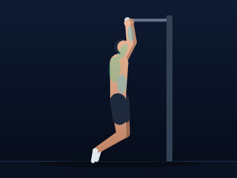
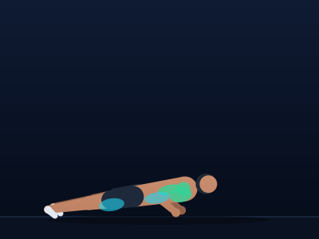
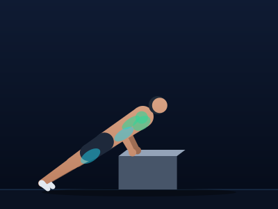
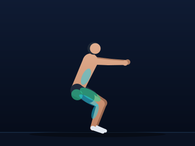
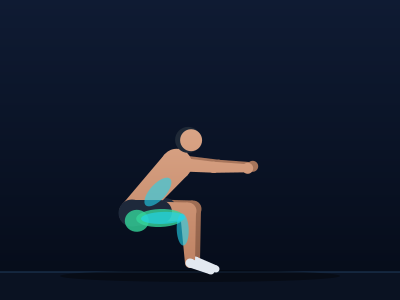
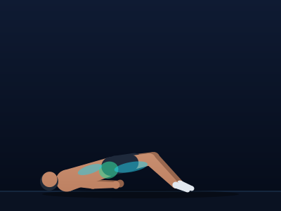
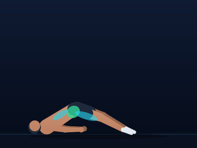

CalisteFlow • Teste de Fidelidade Visual (Etapa 3)
15 Snapshots canônicos gravados para proteção contra regressão visual.
Auditoria Técnica de Paridade com o Protótipo Aprovado:
✓ Medidas dos Ossos: Braço 38px, antebraço 34px, coxa 56px, canela 52px, tronco 66px, cabeça a 27px do ombro.
✓ Espessuras Trapezoidais: Tronco 31→26, coxa 24→17, canela 16→10, pé 9→7, braço 14→11, antebraço 11→8.
✓ Cores Canônicas: Fundo #0F1B33→#050B18, chão #0A1222, linha #1F3B5C (y=272), sombra rx 140, ry 6.
✓ Músculos Ativos: Alvo #34D399 (opacidade 0.35 + 0.45·u), Secundário #22D3EE (80% da opacidade do alvo).
✓ Ordem das Camadas: Fundo → chão → sombra → props → perna oposta → braço oposto → tronco → bermuda quadril → pescoço → cabelo → rosto → perna próxima → braço próximo → músculos.
Barra fixa pronada
Puxar Vertical • ID: pullup

Início / Fase Neutra (u = 0.0)

Meio do Movimento (u = 0.5)

Pico de Esforço / Contração (u = 1.0)
Flexão tradicional
Empurrar Horizontal • ID: pushup

Início / Fase Neutra (u = 0.0)

Meio do Movimento (u = 0.5)

Pico de Esforço / Contração (u = 1.0)
Flexão inclinada
Empurrar Horizontal • ID: incline_pushup

Início / Fase Neutra (u = 0.0)

Meio do Movimento (u = 0.5)

Pico de Esforço / Contração (u = 1.0)
Agachamento livre
Agachamentos • ID: squat

Início / Fase Neutra (u = 0.0)

Meio do Movimento (u = 0.5)

Pico de Esforço / Contração (u = 1.0)
Ponte de glúteo
Cadeia Posterior • ID: bridge

Início / Fase Neutra (u = 0.0)

Meio do Movimento (u = 0.5)

Pico de Esforço / Contração (u = 1.0)